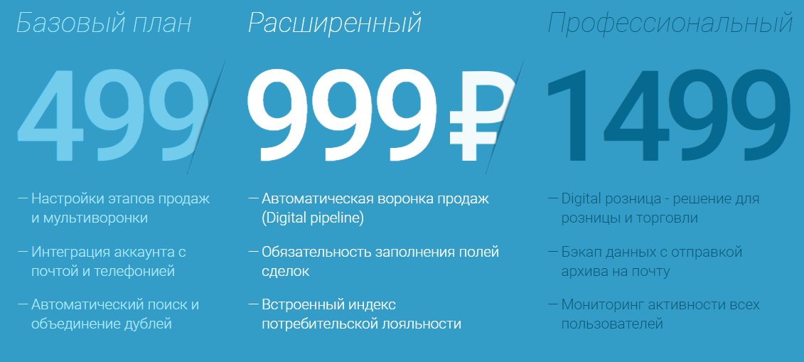

amoCRM |
| В amoCRM реализованы такие функции как: 1. Рабочий стол (визуальная панель, дающая руководителю всю важную информацию о компании в срезе выбранного времени – количество активных и закрытых сделок количество совершенных звонков, число текущих задач, количество хранящихся контактов и прочее.) 2. Сделки (сердце amoCRM. Созданные сделки сгруппированы по разным воронкам продаж) 3. Задачи (список всех прошлых, настоящих и будущих задач по каждому менеджеру продаж) 4. Контакты (список клиентов фирмы) 5. Почта (учет всех входящих и исходящих писем по каждому менеджеру) 6. Аналитика (отдел для отслеживания работы всего отдела продаж или конкретных работников) Далее представлена таблица тарифов: |
|  |